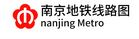
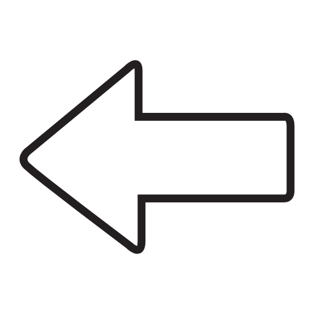

迈皋桥
红山动物园
南京站
新模范马路
玄武门
鼓楼
珠江路
新街口
张府园
三山街
中华门
安德门
天隆寺
软件大道
花神庙
南京南站
双龙大道
河定桥
胜太路
百家湖
小龙湾
竹山路
天印大道
龙眠大道
南医大·江苏经贸学院
南京交院
中国药科大学
经天路
南大仙林校区
羊山公园
仙林中心
学则路
仙鹤门
金马路
马群
钟灵街
孝陵卫
下马坊
苜蓿园
明故宫
西安门
大行宫
上海路
汉中门
莫愁湖
云锦路
集庆门大街
兴隆大街
奥体东
元通
雨润大街
油坊桥
林场
星火路
东大成贤学院
泰冯路
天润城
柳洲东路
上元门
五塘广场
小市
南京林业大学·新庄
鸡鸣寺
浮桥
常府街
夫子庙
武定门
雨花门
卡子门
大明路
明发广场
宏运大道
胜太西路
天元西路
九龙湖
诚信大道
东大九龙湖校区
秣周东路
龙江
草场门·二师·南艺
云南路
九华山
岗子村
蒋王庙
王家湾
聚宝山
苏宁总部·徐庄
汇通路
灵山
东流
孟北
西岗桦墅
仙林湖
雨山路
文德路
龙华路
南京工业大学
浦口万汇城
临江
江心洲
绿博园
梦都大街
奥体中心
中胜
小行
翠屏山
河海大学·佛城西路
吉印大道
正方中路
翔宇路北
翔宇路南
禄口机场
泰山新村
高新开发区
信息工程大学
卸甲甸
大厂
葛塘
长芦
化工园
六合开发区
龙池
雄州
凤凰山公园
方州广场
沈桥
八百桥
金牛湖

»
+
-